00:02在上一个视频中，你看到了逻辑回归的损失函数和代价函数。
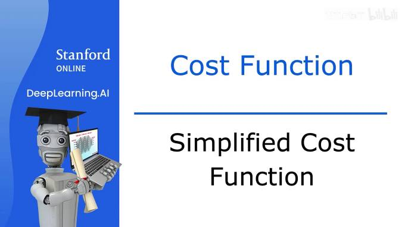
00:08本视频会让你看到一种稍微简单一点的方式来写出损失和代价函数，这样当我们进入梯度下降以拟合逻辑回归模型参数时，实现起来能更简单一些。
00:24提醒一下，这是我们在上个视频中为逻辑回归定义的损失函数。
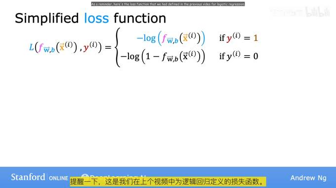
00:32现在，因为我们仍然在处理一个二元分类问题，要么是零，要么是一。
00:39因为只能是零或一，并且不能取零和一以外的任何值，我们将能想出一种更简单的方式来写出这个损失函数。
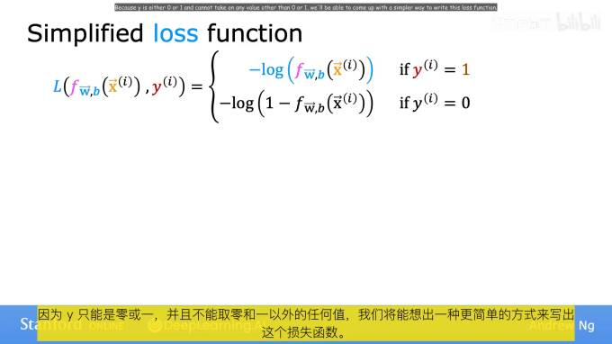
00:51你可以按如下方式写出损失函数。
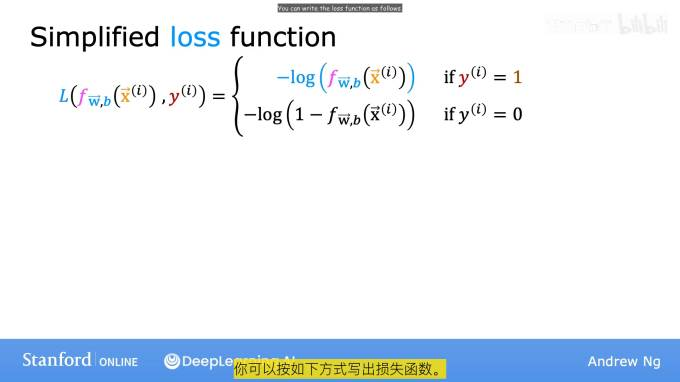
00:55给定预测值 f 和目标标签 y，损失等于负 y 乘以 f 的对数，减去一减 y 乘以一减 f 的对数。
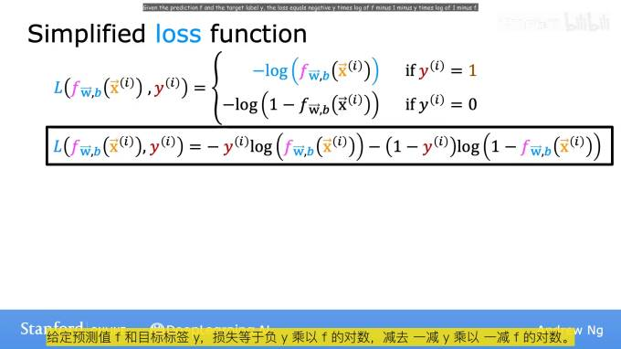
01:12结果证明，我们刚刚用一行写出的这个等式，完全等价于上面这个更复杂的公式。
01:22我们来看看为什么是这样。
01:25现在，记住，y 只能取一或零这两个值。
01:33在第一种情况，假设 y 等于一。
01:38这里的第一个是一，而这个一减 y 就是一减一，因此等于零。
01:48于是损失就变成了负一乘以 f 的对数，减去零乘以后面一堆结果为零的东西，后面那项就没了。
02:00所以当 y 等于一时，损失确实就是上面的第一项，即 x 的 f 的负对数。
02:10我们再看看第二种情况，当 y 等于零时。
02:16在这种情况下，这里的这个 y 等于零，所以第一项就消失了。
02:23而第二项是一减零乘以那个对数项。
02:31所以损失就变成了这个负一乘以一减 x 的 f 的对数。
02:46所以，在 y 等于零的情况下，我们也得到了和上面所定义的同样的原始损失函数。
02:55所以你所看到的是，无论 y 是一还是零，这里的这个单一表达式都等价于上面那个更复杂的表达式，这就是为什么这能让我们用更简单的方式写出损失，仅用一个等式，而无需像上面那样将这两种情况分开。灿 w。
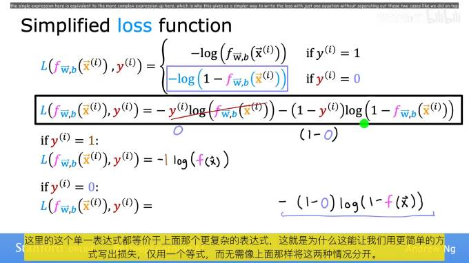
03:16利用这个简化的损失函数，让我们回过头来写出逻辑回归的代价函数。
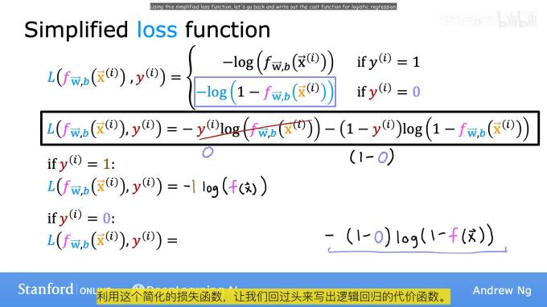
03:25那么，这里再次给出这个简化的损失函数。
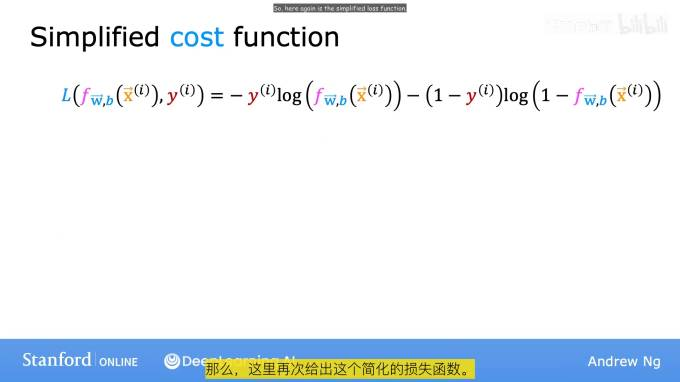
03:29回想一下，代价就是在整个包含 m 个样本的训练集上所求的损失的平均值。
03:38所以，它是 m 分之一乘以从 i 等于一到 m 的损失之和。
03:45现在，如果你代入上述简化损失的定义，那么它看起来就是这样：m 分之一乘以上面这一项的和。
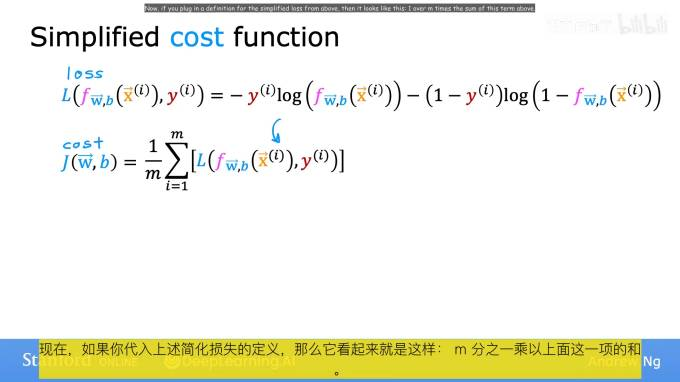
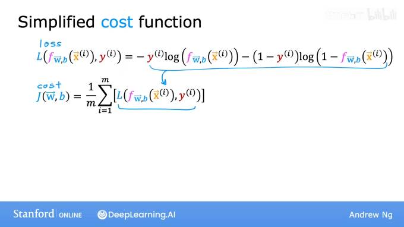
03:56如果你把负号提出来并移到外面，那么你就得到了这里的这个表达式。
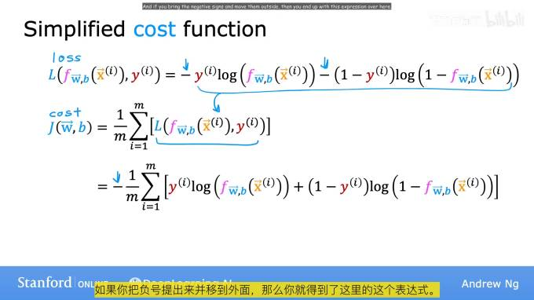
04:03而这就是代价函数，几乎是每个人用来训练逻辑回归的代价函数。
04:11现在，你可能想知道，我们本可以选择很多其他的代价函数，为什么偏偏选择这个特定的函数呢？
04:20虽然我们在这门课上没有时间对此做非常详细的讨论，但我只想提一下，这个特定的代价函数是从统计学推导而来的，用到了一个称为最大似然估计的统计原理，该原理是统计学中关于如何为不同模型高效地找到参数的一种思想。
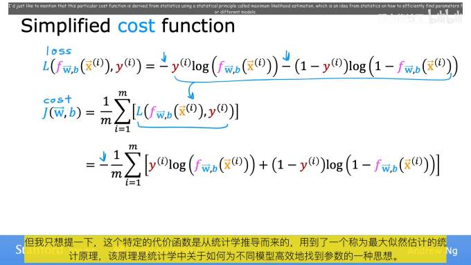
04:43并且这个代价函数有一个很好的性质，即它是凸的。
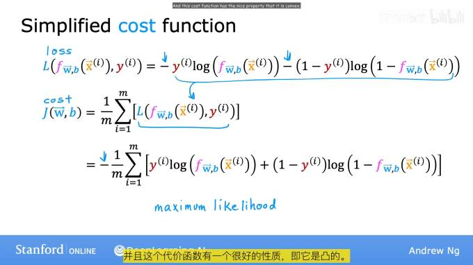
04:49但不用担心去学习最大似然的细节，它只是这个特定代价函数背后更深层的原理和依据。
05:00接下来的选修实验将向你展示如何在代码中实现逻辑回归的代价函数，我建议你去看看，因为你会在本周结束时的练习实验中实现它。
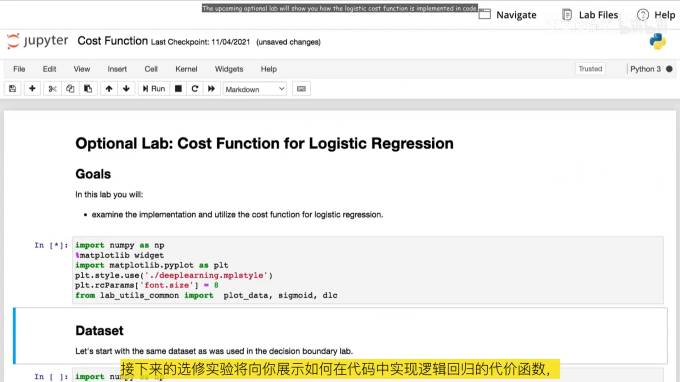
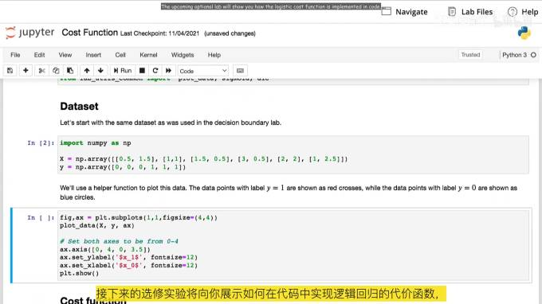
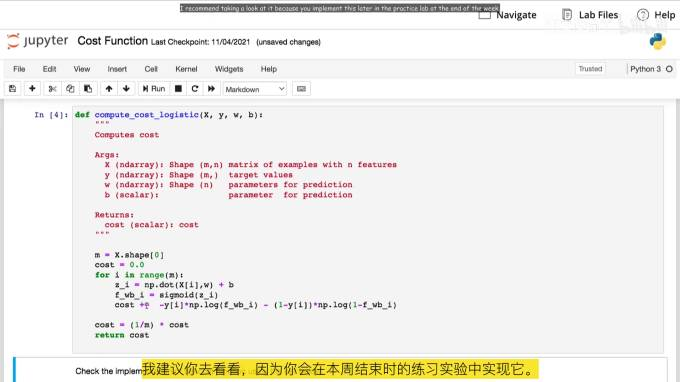
05:17这个即将到来的选修实验也会向你展示，两种不同的参数选择将如何导致不同的代价计算。
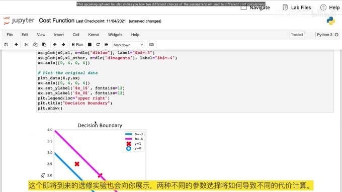
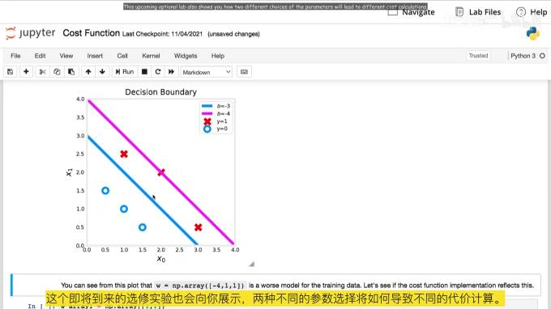
05:26所以，你可以在图中看到，拟合得更好的蓝色决策边界相对于品红色的决策边界具有更低的代价。
05:38那么，有了简化的代价函数，我们现在准备好投入应用梯度下降于逻辑回归了。
05:45让我们在下一个视频中看看。